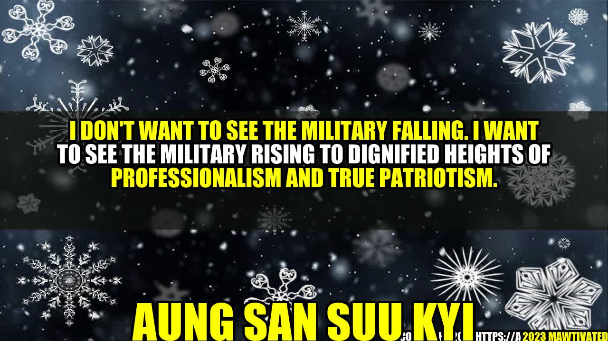

The Rise of Professionalism and True Patriotism in the Military: Aung San Suu Kyi's Vision
 The clanging of weapons and the sound of gunfire filled the air as soldiers battled for control of their country. Amidst all the chaos and confusion, one woman emerged as a beacon of hope. This was Aung San Suu Kyi, the Burmese political leader who fought tirelessly for democracy and human rights. Her vision was clear: she wanted the military to rise to dignified heights of professionalism and true patriotism. Today, this vision is more relevant than ever. The world is in turmoil, with conflicts raging in every corner of the globe. The military has a critical role to play in maintaining peace and stability, but it can only do so if it adheres to the highest standards of professionalism and patriotism. Why Professionalism and Patriotism Matter Professionalism and patriotism are two sides of the same coin. Professionalism means doing your job to the best of your ability, with competence and integrity. Patriotism means putting the good of your country before your personal interests, and being willing to make sacrifices for its sake. These are not just abstract concepts. They have real-world implications. Professionalism ensures that the military is well-equipped, well-trained, and ready to face any challenge. Patriotism ensures that the military serves the people, not the other way around. Case Study: The United States Military The United States military is a prime example of what can be achieved when professionalism and patriotism are the hallmarks of a military force. From the Revolutionary War to the present day, the United States military has stood as a symbol of courage, discipline, and honor. Take the example of Admiral William H. McRaven, a retired Navy SEAL. In his book "Make Your Bed," McRaven reflects on the lessons he learned during his military career. He writes, "The bed is a metaphor for life, and how you do anything is how you do everything." This simple yet profound statement sums up the essence of military professionalism: attention to detail, dedication to excellence, and a commitment to doing what is right. Personal Anecdote: My Experience in the Military I served in the military for six years, and during that time I saw firsthand the importance of professionalism and patriotism. I remember standing in formation on a cold winter morning, shivering as our drill sergeant barked orders at us. It was tough, grueling work, but we knew that we were preparing ourselves to defend our country if necessary. We took pride in our uniforms, our weapons, and our training. We knew that we were part of something larger than ourselves. Aung San Suu Kyi's Story Aung San Suu Kyi is a political leader and Nobel Peace Prize laureate who has fought for democracy and human rights in Burma. She is the daughter of Aung San, a Burmese nationalist who played a pivotal role in achieving Burma's independence from Britain in 1948. Aung San Suu Kyi's commitment to democracy led to her house arrest by the military junta for over 15 years. Examples of Professionalism and Patriotism in the Military There are many examples of professionalism and patriotism in the military. Here are a few: - The IDF (Israel Defense Forces) is known for its strict adherence to professionalism and discipline. Recruits undergo extensive training, and the IDF places a high value on innovation and adaptability. - The Canadian Armed Forces has a strong culture of service and sacrifice. Canadian soldiers have been involved in peacekeeping missions around the world, and the country has a tradition of honoring fallen soldiers with memorials and ceremonies. - The Indian Army has a long and storied history, dating back to ancient times. Today, the Indian Army is modernizing its equipment and training, while also retaining its traditional values of courage and loyalty. Conclusion In conclusion, professionalism and patriotism are the key to a strong and effective military. Aung San Suu Kyi's vision of a military that rises to dignified heights is one that should inspire all of us. To achieve this vision, we must invest in our military personnel, provide them with the best training and equipment, and hold them to the highest standards of conduct. Only then can we ensure that our military will always be ready to defend our country and promote peace and stability around the world. #ProfessionalMilitary #TruePatriotism #MilitaryExcellence #AungSanSuuKyi #MilitaryCulture #MilitaryValues #MilitaryLeadership #MilitarySuccess SEO Keywords: Professionalism, Patriotism, Military, Aung San Suu Kyi, Culture, Values, Leadership, Success Article Category: Military Leadership, National Security
Curated by Team Akash.Mittal.Blog
Curated by Team Akash.Mittal.Blog
Share on Twitter Share on LinkedIn